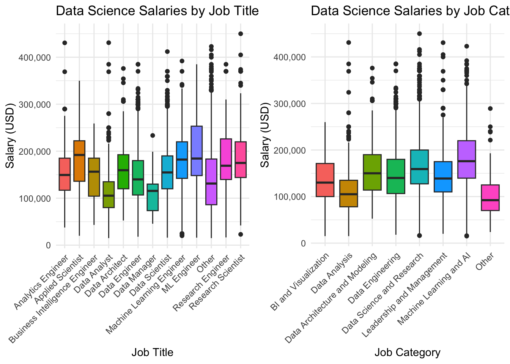
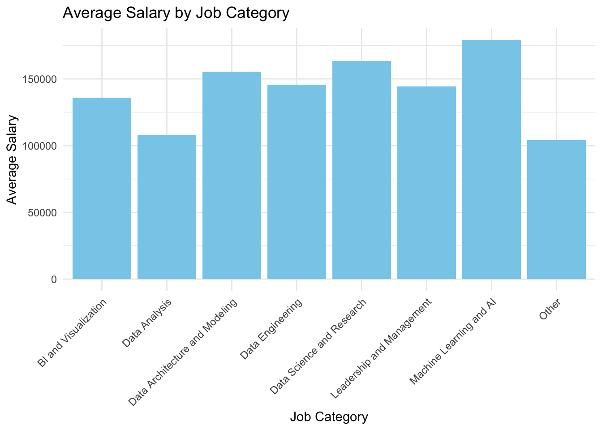
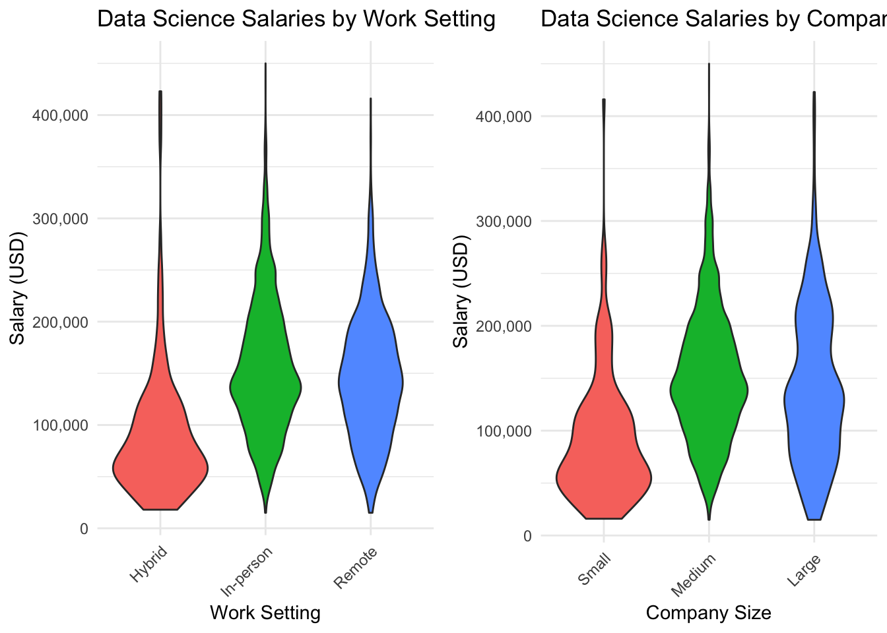

── Attaching packages ─────────────────────────────────────── tidyverse 1.3.2 ──
✔ ggplot2 3.4.4 ✔ purrr 1.0.2
✔ tibble 3.2.1 ✔ dplyr 1.1.4
✔ tidyr 1.2.1 ✔ stringr 1.4.1
✔ readr 2.1.2 ✔ forcats 0.5.2
── Conflicts ────────────────────────────────────────── tidyverse_conflicts() ──
✖ dplyr::filter() masks stats::filter()
✖ dplyr::lag() masks stats::lag()
Registered S3 method overwritten by 'mosaic':
method from
fortify.SpatialPolygonsDataFrame ggplot2
The 'mosaic' package masks several functions from core packages in order to add
additional features. The original behavior of these functions should not be affected by this.
Attaching package: 'mosaic'
The following object is masked from 'package:Matrix':
mean
The following objects are masked from 'package:dplyr':
count, do, tally
The following object is masked from 'package:purrr':
cross
The following object is masked from 'package:ggplot2':
stat
The following objects are masked from 'package:stats':
binom.test, cor, cor.test, cov, fivenum, IQR, median, prop.test,
quantile, sd, t.test, var
The following objects are masked from 'package:base':
max, mean, min, prod, range, sample, sumProject Write-up
A Look Into Salaries in Data Science
Introduction:
As different career paths fall in and out of demand, it is hard to know what is a worth while pursuit in today’s job market. We are all interested in careers in data science and we want be knowledgeable about the field as we prepare for graduation. We were especially curious about two things: - What aspects of a company affect average salary? - How does salary change based on personal characteristics? To answer these questions we first selected a data set titled “Jobs and Salaries in Data Science,” which originated from AI Jobs. Each observation represents one person in one year. Our dataset contains 9355 observations with 12 variables. The variables include information on salary, and explanatory variables such as company size, experience level, work setting, employment type, and year. There is also an extensive list of data science job titles.
The Effect of Company-Level Demands and Characteristics on Salary
Introduction:
In this section, we aim to answer the question ‘how do company-related factors (like job title, job category, work setting, and company size) influence the salary of workers in the field of data science?’ In order to get a complete understanding of data science salaries, it is important to disaggregate this data such that we are able to extract more specific insights. We decided looking at average salaries by job title, job category, work setting, and company size provide a useful glimpse into the relative value (in a strictly monetary sense) of certain jobs and certain company attributes. First, viewing salary by job title conveys important information about which specific jobs are in high demand (or low supply). Job category is useful in a similar way, as it provides a more zoomed-out view of the data science landscape. Since the COVID pandemic increased the need and acceptability of remote work, we thought it would be appropriate to investigate the differences in salary by work environment. Finally, company size provides a useful understand of how differently sized companies pay their data science employees.
Approach (1-2 paragraphs):
In order to address this question, we must break it up into three different parts. First, we analyze the effect of company location on average salary. This relationship between company location and salary is particularly interesting as data science is a relatively new field and requires a lot of technological infrastructure to perform. In addition, in many developing countries, there is likely not as high of a demand for data scientist. As such, we are interested in the differential pay between countries for similar jobs. Next, in order to disaggregate the data in service of more specific analysis, its important to look not just at differential pay between countries in the field of data science, but also differential pay between particular positions within data science.
Below is a map displaying average data science salaries by company location
As displayed in the graph, it appears that data scientists in highly developed nations tend to be compensate more than those in developing countries. Namely, companies in the United States, Canada, Saudi Arabia, Australia, and Japan pay their data scientists the most, on average, based on this data. On the other hand, Indonesia, Malaysia, Egypt, Turkey, Thailand, Pakistan, and Ecuador pay the least on average. It is important to note, however, that many countries, in particular many countries in Africa, South America, and the Eurasian Steppes have no data in this dataset on data scientist salaries. This is likely because most of these countries have very few data scientists, but could also be caused simply by a lack of access to salary data in these countries.
Analysis (2-3 code blocks, 2 figures, text/code comments as needed):
In this section, provide the code that generates your plots. Use scale functions to provide nice axis labels and guides. You are welcome to use theme functions to customize the appearance of your plot, but you are not required to do so. All plots must be made with ggplot2. Do not use base R or lattice plotting functions.
`summarise()` has grouped output by 'job_title_grouped'. You can override using
the `.groups` argument.

library(cowplot)
Attaching package: 'cowplot'The following object is masked from 'package:mosaic':
theme_mapexp_salary <- data_science %>%
group_by(experience_level) %>%
summarize(avg_salary = mean(salary_in_usd, na.rm = TRUE))
employment_salary <- data_science %>%
group_by(employment_type) %>%
summarize(avg_salary = mean(salary_in_usd, na.rm = TRUE))
work_salary <- data_science %>%
group_by(work_setting) %>%
summarize(avg_salary = mean(salary_in_usd, na.rm = TRUE))
company_salary <- data_science %>%
group_by(company_size) %>%
summarize(avg_salary = mean(salary_in_usd, na.rm = TRUE))
# Plot 3: Average Salary by Work Setting
plot1 <- ggplot(data = work_salary, aes(x = work_setting, y = avg_salary)) +
geom_bar(stat = "identity", fill = "lightpink") +
theme_minimal() +
labs(title = "Average Salary by Work Setting",
x = "Work Setting",
y = "Avg Salary") +
theme(axis.text.x = element_text(angle = 45, hjust = 1))
# Plot 4: Average Salary by Company Size
plot2 <- ggplot(data = company_salary, aes(x = factor(company_size, levels = c("S", "M", "L")), y = avg_salary)) +
geom_bar(stat = "identity", fill = "lightblue") +
theme_minimal() +
labs(title = "Average Salary by Company Size",
x = "Company Size",
y = "Avg Salary") +
theme(axis.text.x = element_text(angle = 45, hjust = 1)) +
scale_x_discrete(labels = c("S" = "Small", "M" = "Medium", "L" = "Large"))
# Arrange the plots in a grid
combined_plot <- plot_grid(plot1, plot2, ncol = 1)
# Print the combined plot
combined_plot
Discussion (1-3 paragraphs):
In the Discussion section, interpret the results of your analysis. Identify any trends revealed (or not revealed) by the plots. Speculate about why the data looks the way it does.
Question 2: What is the distribution of different data science jobs by company location, age of the individual, experience level, and work setting?
Introduction
In this section we aim to asnwer the question ‘What is the distribution of different data science jobs by company location, age of the individual, experience level, and work setting?’ This is particularly interesting since, assuming that the dataset is a representative sample of data scientists throughout the world (perhaps a significant assumption), we can extrapolate information about the makeup of data scientists throughout the world.
Analysis
Breaking News: tmap 3.x is retiring. Please test v4, e.g. with
remotes::install_github('r-tmap/tmap')
library(cowplot)
exp_salary <- data_science %>%
group_by(experience_level) %>%
summarize(avg_salary = mean(salary_in_usd, na.rm = TRUE))
employment_salary <- data_science %>%
group_by(employment_type) %>%
summarize(avg_salary = mean(salary_in_usd, na.rm = TRUE))
work_salary <- data_science %>%
group_by(work_setting) %>%
summarize(avg_salary = mean(salary_in_usd, na.rm = TRUE))
company_salary <- data_science %>%
group_by(company_size) %>%
summarize(avg_salary = mean(salary_in_usd, na.rm = TRUE))
# Plot 1: Average Salary by Experience Level
plot3 <- ggplot(data = exp_salary, aes(x = experience_level, y = avg_salary)) +
geom_bar(stat = "identity", fill = "lightgreen") +
theme_minimal() +
labs(title = "Average Salary by Experience Level",
x = "Experience Level",
y = "Avg Salary") +
theme(axis.text.x = element_text(angle = 45, hjust = 1))
# Plot 2: Average Salary by Employment Type
plot4 <- ggplot(data = employment_salary, aes(x = employment_type, y = avg_salary)) +
geom_bar(stat = "identity", fill = "lightcoral") +
theme_minimal() +
labs(title = "Average Salary by Employment Type",
x = "Employment Type",
y = "Avg Salary") +
theme(axis.text.x = element_text(angle = 45, hjust = 1))
# Arrange the plots in a grid
combined_plot2 <- plot_grid(plot3, plot4, ncol = 1)
# Print the combined plot
combined_plot2We encourage you to be concise. A paragraph should typically not be longer than 5 sentences.
You are not required to perform any statistical tests in this project, but you may do so if you find it helpful to answer your question.